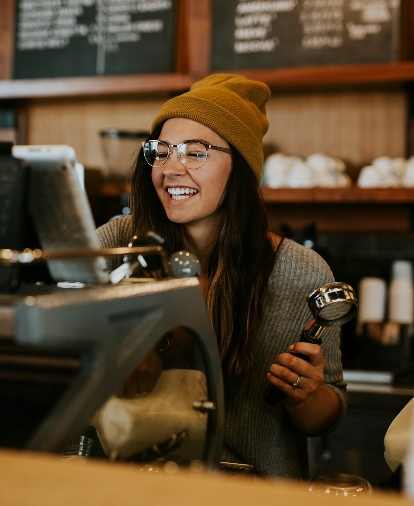

Ember & Oak started with two NTU students, one shared final-year project deadline and nowhere to work after Lee Wee Nam Library locked its doors.
How it started
In 2023, Wei Ling and Hafiz were in their final year, both stuck on their FYP. Every weeknight at 9.30pm Lee Wee Nam Library closed and they were sent out with half-written reports. The canteen stalls had already shut, the few seats with plugs were taken, and the bus ride home to Tampines was too long to start working again after.
So they made a list in the back of a lecture notebook: what would the perfect place to study on campus look like? Big tables. A plug at every seat. Strong air-con. Good kopi and good coffee. Prices a student can pay every day. Open late. That list became Ember & Oak, right here in North Spine.
“After 2pm, stay as long as your reading list needs.” That rule is still on the wall by the door.
Why “Ember & Oak”
The big tables are made from reclaimed oak that came out of an old shophouse renovation in Tiong Bahru. “Ember” is for the roaster: our beans are roasted every week in small batches by a local roaster in Jalan Besar, so the coffee you drink was roasted days ago, not months.
The people behind the counter
Most of our baristas are NTU students too. They know what it is like to have three submissions due in the same week, and they will happily make your fourth kopi a little more gao. We train every new barista for two weeks before they pour their first drink alone, and we pay them fairly, because good coffee needs people who want to stay.
The kaya is cooked fresh every morning. Kopi-o refills are free all day. And yes, we really are open till 11pm on weekdays.
